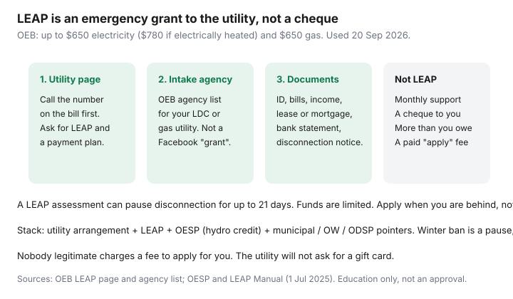

Utilities · Canada
Ontario LEAP and Utility Emergency Assistance: How to Ask for Help with Hydro or Gas Bills
People in arrears often do not know LEAP exists, or they fear the utility will only threaten disconnection. The Low-income Energy Assistance Program is an OEB emergency grant for eligible households behind on electricity or natural gas. It is not a secret loophole and it is not a monthly cheque. It is a documented ask through an intake agency, paid to the account.
This is navigation, not an application on your behalf and not a promise you will qualify. For the winter pause itself see Ontario winter disconnection rules. For the call-early playbook outside a grant see payment arrangements.
Key takeaways
- OEB LEAP (used 20 Sep 2026): up to $650 on electricity ($780 if the home is electrically heated) and $650 on natural gas, paid to the utility, usually once per year, never more than you owe.
- Start with the number on the bill and the utility’s assistance page. Apply through an OEB-listed intake agency for your LDC or gas utility — not a Facebook “grant helper.”
- Typical documents: ID, current bills, disconnection notice if any, lease or mortgage proof, household income, latest bank statement.
- A payment arrangement and LEAP can stack. LEAP is not monthly support. OESP is the ongoing hydro credit.
- Nobody legitimate charges a fee to apply. A LEAP assessment can pause disconnection for up to 21 days. Funds run out — apply when you are behind.
What LEAP-type programs generally cover (verify live criteria)
The OEB LEAP page (used 20 Sep 2026) is the source of truth. In plain language:
- You are behind (in arrears) on electricity or natural gas and may face disconnection.
- Income-tested through the intake agency. Special low-income customer-service rules can apply if you qualify.
- Maximums: $650 electricity, $780 if electrically heated, $650 gas. You cannot receive more than you owe.
- Paid to the utility. You will not get a cheque.
- Intended as once per year. The OESP & LEAP Manual (1 Jul 2025) allows a second ask in exceptional cases if the first grant was under the maximum — that is agency discretion, not a right.
- If you owe more than the maximum, the agency should still talk about an arrears agreement for the rest so service is sustainable.
Unit sub-meter condos and some retail arrangements can be messy. Ask the agency whether your account type is eligible. Reload oeb.ca the week you apply — caps and forms move.

Who to contact first: your utility’s assistance page
- The phone number on the bill — Toronto Hydro, Hydro One, Alectra, Enbridge Gas, your LDC. Say you cannot pay the balance, you want a payment arrangement, and you want the LEAP intake agency for your account.
- The OEB LEAP agencies directory: pick your utility, then the listed agency (United Way and municipal social-services names are common). Enbridge has pointed customers to listed agencies such as United Way Simcoe Muskoka — your bill’s utility is the filter, not a guess.
- 211 Ontario if you cannot find the agency or you need a parallel food / rent / heat conversation.
Do not start with a random “Ontario hydro grant” ad. The OEB does not charge to apply. Your utility does not ask for a gift card.
Documents typically requested
The OEB page’s list (used 20 Sep 2026):
- Identification.
- Current electricity and gas bills.
- A disconnection notice, if you have one.
- Rental receipt, lease, mortgage, or other housing proof the agency accepts.
- Proof of household income for adults (stubs, employment letter, tax return).
- Most recent bank statement.
Put it in one envelope or one PDF folder before the interview. Missing pages are how a 21-day hold expires while you look for a T4.
Payment plans vs one-time grants
| Tool | What it does | What it is not |
|---|---|---|
| Utility arrears arrangement | Splits a balance; dates you can keep | A loan ad; permission to skip new bills |
| LEAP emergency grant | One-time credit to the utility, capped | Monthly support; cash in your hand |
| OESP | Ongoing monthly credit on an eligible electricity bill | A gas credit; a substitute for LEAP arrears |
| Low-income customer-service rules | Longer agreements, deposit relief if you qualify | Automatic — ask the utility to apply them |
| Winter disconnection ban | 15 Nov–30 Apr pause for licensed distributors | Forgiveness; a USMP guarantee |
Avoiding scams that charge fees to “apply for you”
- No e-transfer, Bitcoin, or gift card to “release LEAP.”
- No remote-access app on your phone.
- No fee to a stranger who “knows the form.” Community legal clinics and intake agencies do not invoice you for the application.
- The utility will not text a new URL from a random number. Use the domain on the bill or oeb.ca.
The OEB has warned that scam volume rises when the winter ban ends. Treat May like a phishing season.
Parallel supports: municipal, provincial social assistance pointers
If you are on Ontario Works or ODSP, tell the caseworker and the intake agency — there may be a discretionary heat / utility amount or a community start-up / emergency fund that is not LEAP. Municipal hardship funds and faith-based emergency assistance sometimes cover a remainder after the $650 cap. 211 is the switchboard. A community legal clinic helps if the notice looks wrong, you are medically dependent on power, or a unit sub-meter provider is playing by different rules.
This is education, not legal advice and not a determination that you qualify. Criteria and dollars move. Reload the OEB LEAP page the week you book the interview.
Sources & date stamps
- OEB, Low-income Energy Assistance Program — $650 / $780 electricity, $650 gas; paid to the utility; document list; agency path (used 20 Sep 2026).
- OEB, LEAP agencies directory — apply by utility, not by a Facebook ad.
- OEB, OESP & LEAP Manual (1 Jul 2025) — once-per-year intent; exceptional second grant; sustainment via arrears agreements.
- OEB, winter disconnection and OESP pages — 21-day hold; monthly hydro credit is a different tool.
Frequently asked questions
How much is LEAP in Ontario?
The OEB page used 20 Sep 2026 lists up to $650 for electricity ($780 if electrically heated) and $650 for natural gas, paid to the utility, not more than you owe. Confirm on oeb.ca when you apply.
Do I apply at the OEB?
No. You apply through a listed intake agency for your electricity or gas utility. The OEB publishes the agency directory. Call the number on the bill as well.
Will I get a cheque?
No. The grant is credited to the utility account. Anyone who wants a fee or an e-transfer to “release” money is a scam.
Can LEAP stop a disconnection?
An intake agency assessment can ask the utility to pause disconnection or collection for up to 21 days. That is not a second winter ban. File the paperwork.
Is OESP the same as LEAP?
No. OESP is an ongoing monthly electricity credit for eligible households. LEAP is emergency arrears help. You may need both. OESP does not pay the gas bill.